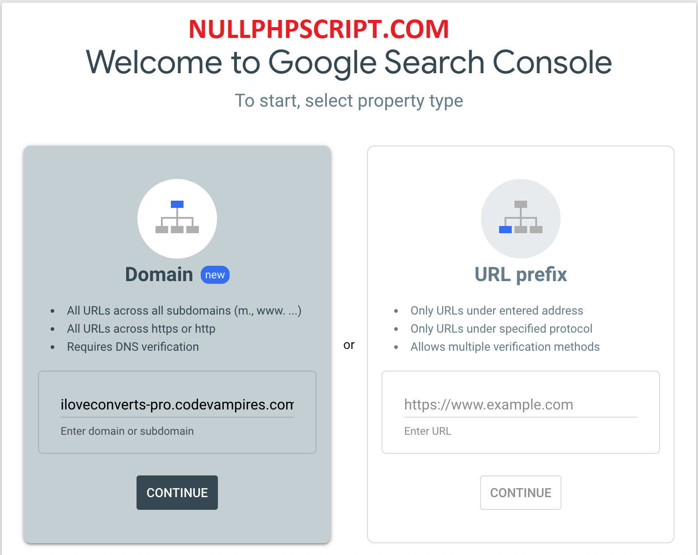
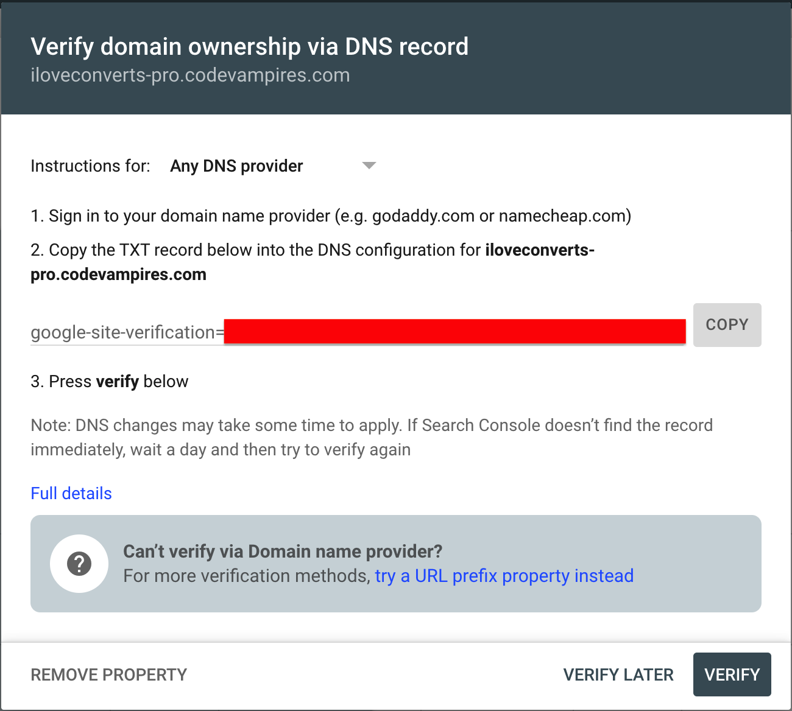
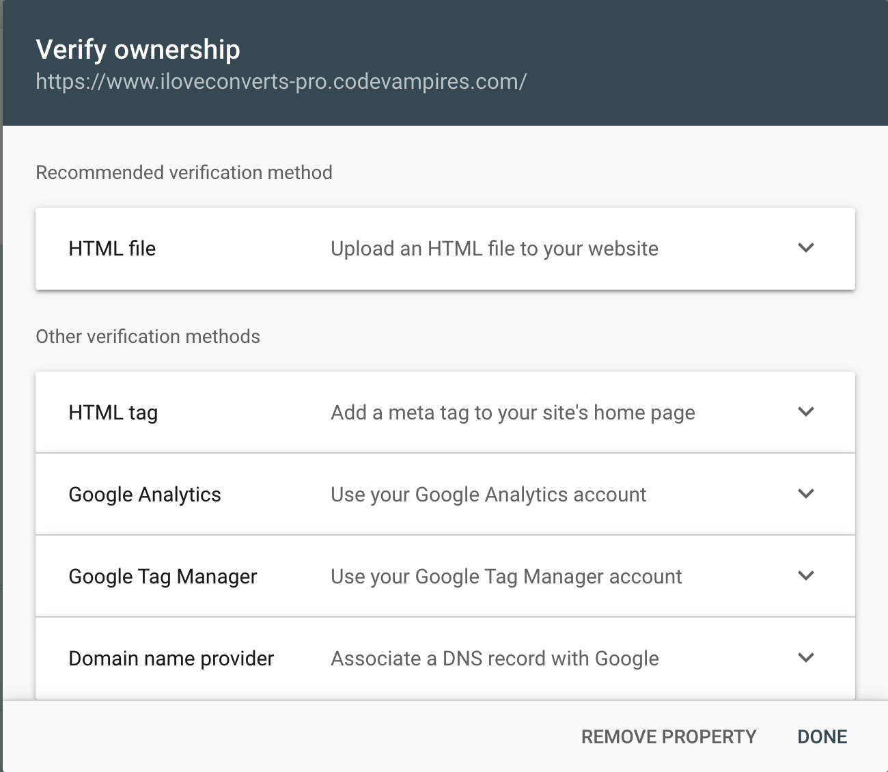

Item Name : iLoveConverts Pro- Online Converter Tools
Item Version : v 1.0
Author : appsplaces
First of all, Thank you so much for purchasing this application and for
being a loyal customer.
You are awesome!
You are entitled to get free lifetime updates to this product +
exceptional support from the author directly.
This documentation is to help you regarding each step of customization. Please go through the documentation carefully to understand how this app is made and how to edit this properly. Basic Angular 11 knowledge is required to customize this app. You may learn basics here
Download iLoveConverts ProYou will need the following sofwares to customize this app.
To install Angular on your local system, you need the following: Node.js and NPM package manager
npm install -g @angular/cli
You may need to add “sudo” in front of these commands to install the utilities globally.
For more information please see the Angular Instalation doc - https://angular.io/guide/setup-local
iLoveConverts Pro using the firebase database for changing the application logos, titles etc.
service cloud.firestore {
match /databases/{database}/documents {
match /{document=**} {
allow read;
allow write: if request.auth != null;
}
}
}
rules_version = '2';
service firebase.storage {
match /b/{bucket}/o {
match /{allPaths=**} {
allow read;
allow write: if request.auth != null;
}
}
}
Google AdSense is a simple and free tool that will allow you to earn money by displaying ads on your site.
You just enter your Google Adsense Client and Google Adsense Slot in the project.
Go into the project
src/environments/environment.ts`
src/environments/environment.prod.ts`
and replace with your Adsense client and slot number.
adClient: 'ca-pub-xxxxxxxxxxxxxxxx', // Google Adsense AdClient
adSlot: xxxxxxxxxxxxxx, // Google Adsense AdSlotWe used the ng2-adsense plugin for integration google adsense, see the documentation from here- https://github.com/scttcper/ng2-adsense
Google Analytics is a web analytics service offered by Google that tracks and reports website traffic, reports etc.
We have integrated analytics in this application to use this services you just
need to enter your Google Analytics Code in the project. Go into the project
src/environments/environment.ts` &
src/environments/environment.prod.ts`
and replace with your analytics code.
ga: 'G-XXXXXXXXXX', // Google Analytics CodeWe used the Ngx Google Analytics plugin for integration google analytics, see the documentation from here- https://www.npmjs.com/package/ngx-google-analytics
Search Console tools and reports help you measure your site's Search traffic and performance, fix issues, and make your site shine in Google Search results.
Here we will give you a complete guide how to setup google Webmaster Tools in your project.
To set up Webmaster Tools, visit http://www.google.com/webmasters/tools and sign in with your Google account.
To add a new property:
Open the property selector dropdown in any Search Console page.
Select + Add property on the dropdown.
Choose the type of property to add and then enter your site’s URL.
Next, you’ll need to verify that the site is yours. Lets verify domain ownership via DNS record.
If you choose URL prefix property option, You'll be given a number of options. Just follow the steps of each section.
If you want to add a HTML meta tag to your site's home page, replace with your meta tag at index.html file.
// Google Search Console Webmaster Tools
< meta name="google-site-verification" content="place_your_google_search_console_site_verification_id" />For more details, see the documentation from here- https://support.google.com/webmasters/answer/34592?hl=en#zippy=%2Cdomain-property%2Cgoogle-hosted-property%2Curl-prefix-property
First you need to download the app from Codecanyou market place.
After successfully downloaded `iLoveConvertsPro` then unzip the files, here you will get three folders 1. `iLoveConvertsPro` main website 2. AdminPanel & 3. Documentation.
open a terminal window `cd` into the `iLoveConvertsPro` project root directory and install dependency packages by running `npm install` and then run the command `ng serve`. The server will be up & running on localhost 4200 port. At browser window, open http://localhost:4200
npm install
ng serve
First you need to follow the firebase setup steps and go into the AdminPanel `src/environments/environment.ts` & `src/environments/environment.prod.ts` files and paste here firebase configuration information.
Open a terminal window `cd` into the `AdminPanel` project root directory and install dependency packages by running `npm install` and then run the command `ng serve`. The server will be up & running on localhost 4200 port. At browser window, open http://localhost:4200
npm install
ng serve
You can get a preview of your application using the ng serve --prod command that starts a local HTTP server such that the application with production files is accessible using - http://localhost:4200.
ng serve --prod
During development, we use the ng serve command to build, watch, and serve the application from local memory. For a production usage, you have to deploy all the files from the dist folder in the HTTP server of your choice.
The output folder is dist/project-name/ by default. For example this project name is iLoveConvertsPro so the output folder you will find at dist/iLoveConvertsPro
When you are ready to deploy, however, you must use the ng build command to build the app and deploy the build artifacts elsewhere.
ng build --prod
For the simplest deployment, create a production build and copy the output directory to a web server.
ng build --prod
For details documentation - https://angular.io/guide/deployment